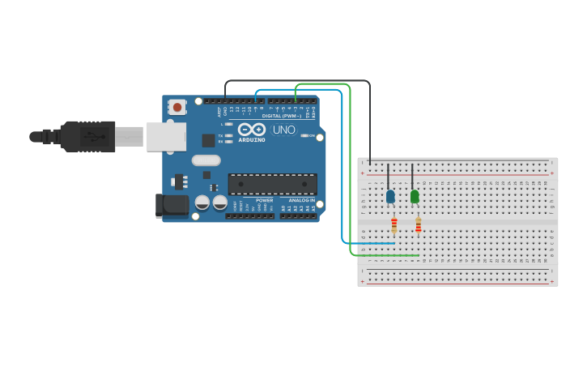

PROJECT 05: LED FADING
Analog Output via PWM
Project Summary
Digital pins are usually 0V (OFF) or 5V (ON). But what if you want 2.5V to make an LED half-bright? In this project, we use Pulse Width Modulation (PWM) to simulate analog voltages and create a breathing light effect.
Key Components
- Arduino Uno R3
- LED (Any Color)
- 220Ω Resistor
- Jumper Wires
- Breadboard
Circuit Diagram

Pin Connections
| Arduino Pin | Component Connection |
|---|---|
| Pin 9 (PWM ~) | Positive Leg (Anode) of LED |
| GND | Negative Leg (Cathode) via Resistor |
Step-by-Step Instructions
- Place the LED on the breadboard.
- Connect the 220Ω resistor to the cathode (short leg) and connect it to GND.
- Connect a jumper wire from the Anode (long leg) to Pin 9.
- Important: Pin 9 is a PWM pin (marked with a ~ symbol on the board). Standard pins like 13 cannot fade.
- Upload the code below.
Arduino Code
/* Project 5 - LED Fading
* Uses analogWrite() to fade an LED on pin 9.
*/
int ledPin = 9; // LED connected to digital pin 9
void setup() {
// nothing happens in setup
}
void loop() {
// fade in from min to max in increments of 5 points:
for (int fadeValue = 0 ; fadeValue <= 255; fadeValue += 5) {
// sets the value (range from 0 to 255):
analogWrite(ledPin, fadeValue);
// wait for 30 milliseconds to see the dimming effect
delay(30);
}
// fade out from max to min in increments of 5 points:
for (int fadeValue = 255 ; fadeValue >= 0; fadeValue -= 5) {
// sets the value (range from 0 to 255):
analogWrite(ledPin, fadeValue);
// wait for 30 milliseconds to see the dimming effect
delay(30);
}
}
How It Works
- Hardware Theory (PWM):
-
The ~ Symbol:
On the Arduino, pins marked with `~` (3, 5, 6, 9, 10, 11) support fading. They switch ON and OFF so fast that the eye sees it as "dimming." -
analogWrite(pin, value):
Unlike `digitalWrite` (HIGH/LOW), this function takes a number between 0 (Fully OFF) and 255 (Fully ON). - Code Logic:
-
The Fade In Loop:
for (int i = 0; i <= 255; i += 5)
This loop starts at 0 brightness